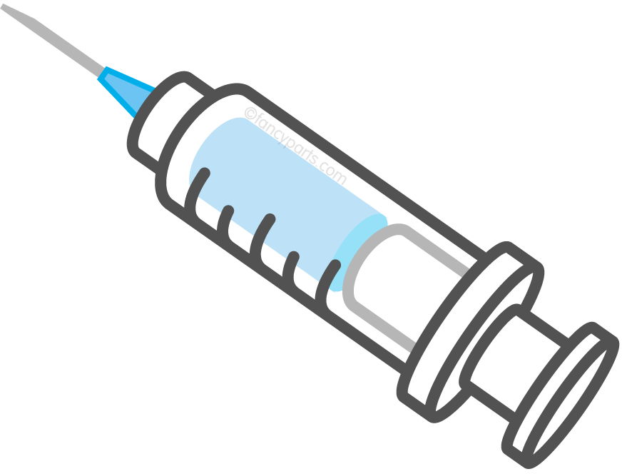

Sign Up
Log In
Gallery
Quiz Page
Online Store
Feedbacks
About Me
Gallery
1 / 6
2 / 6
3 / 6
4 / 6
5 / 6

❮
❯


![Self-diagnosis refers to the practice of individuals attempting to identify their own medical conditions or ailments without consulting a qualified healthcare professional. While seeking information about symptoms online or using self-assessment tools may provide some insight, self-diagnosis carries significant risks. It often lacks the expertise and context required for accurate interpretation of symptoms, leading to misinterpretation, unnecessary anxiety, and potentially harmful self-treatment. Additionally, relying solely on self-diagnosis may delay or prevent individuals from receiving timely medical intervention, resulting in worsened health outcomes. It's crucial for individuals to recognize the limitations of self-diagnosis and seek guidance from healthcare professionals for accurate assessment, diagnosis, and appropriate treatment tailored to their specific needs.](med.png)
![Acquiring essential medical equipment such as a blood sugar meter, first aid kit, thermometer, stethoscope, and nebulizer is crucial for maintaining efficient healthcare delivery. These devices serve diverse purposes, ranging from routine health monitoring to emergency care interventions. A blood sugar meter enables individuals to monitor their glucose levels, vital for managing diabetes effectively. A first aid kit provides immediate medical assistance for minor injuries and emergencies. A thermometer aids in assessing body temperature, a fundamental indicator of illness. A stethoscope facilitates auscultation, enabling healthcare providers to listen to internal body sounds for diagnostic purposes. Lastly, a nebulizer delivers medication directly to the lungs, crucial for managing respiratory conditions like asthma. Ensuring the availability and proper functioning of these medical devices is paramount for delivering prompt and effective healthcare interventions.](inj.png)